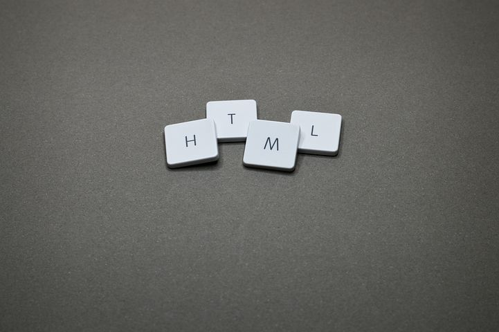
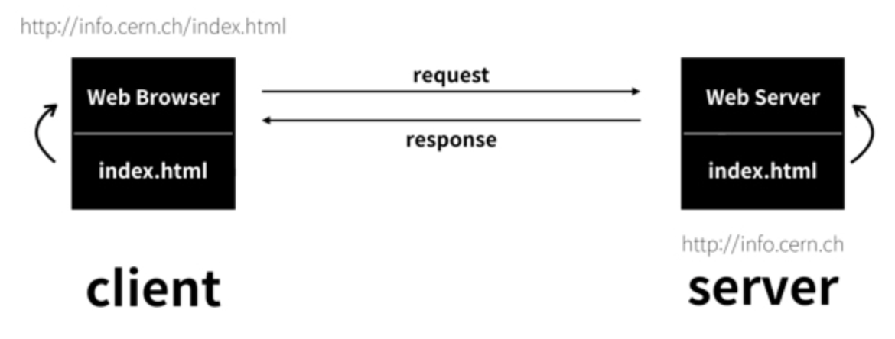
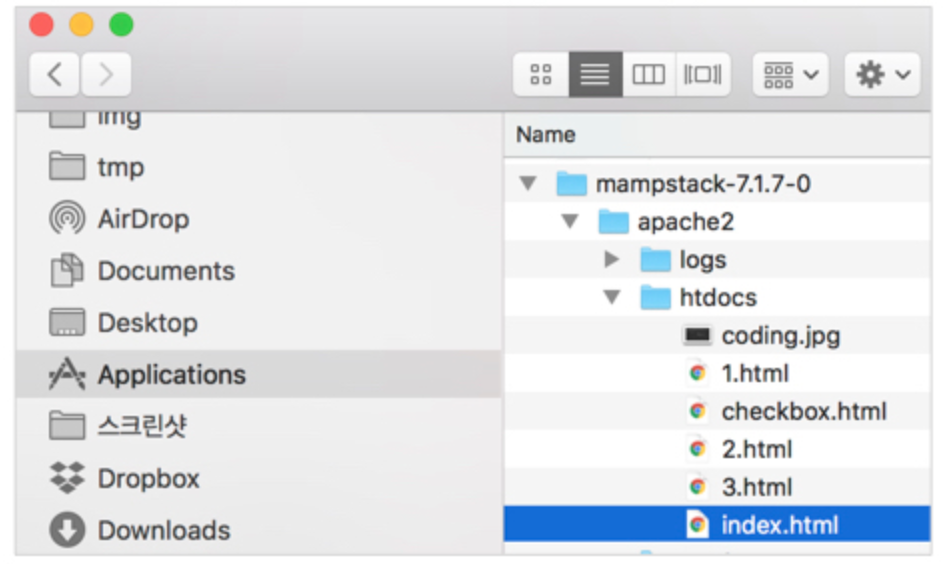
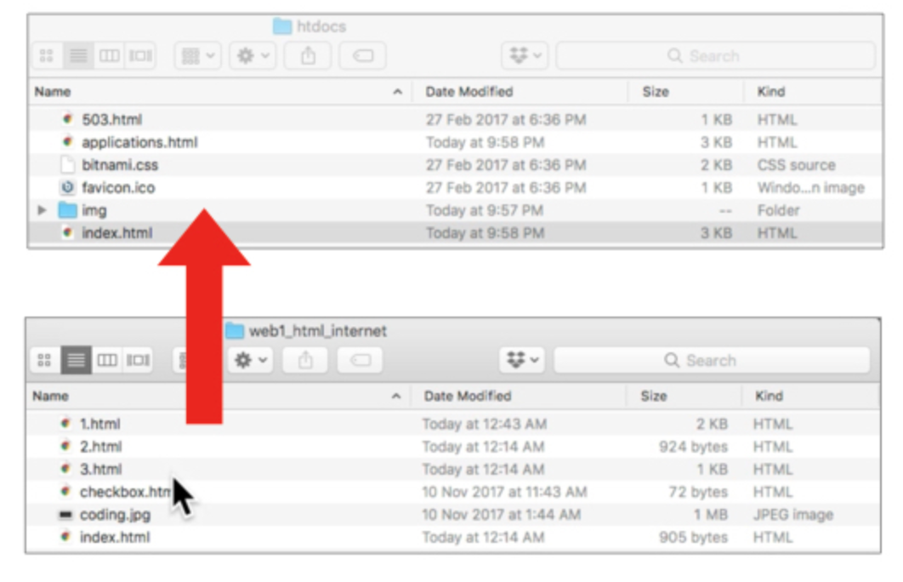
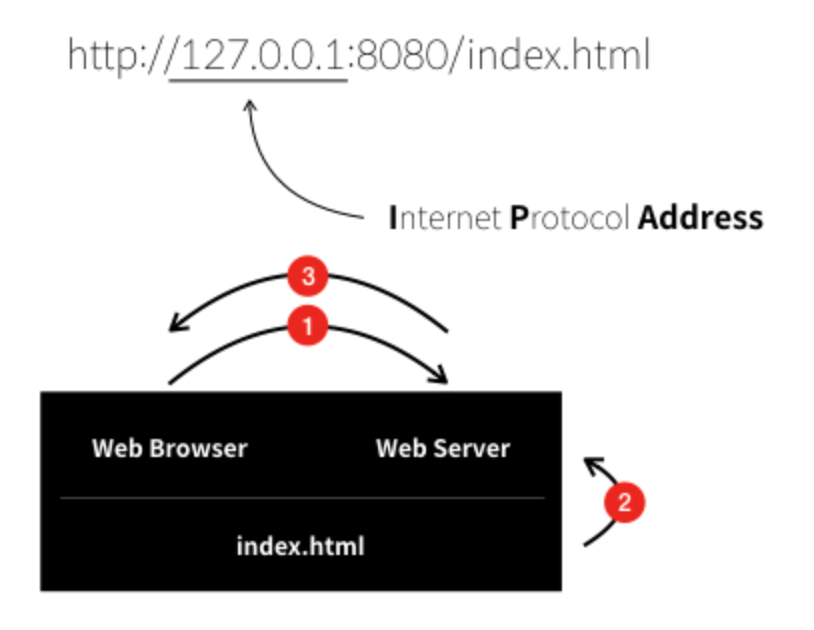
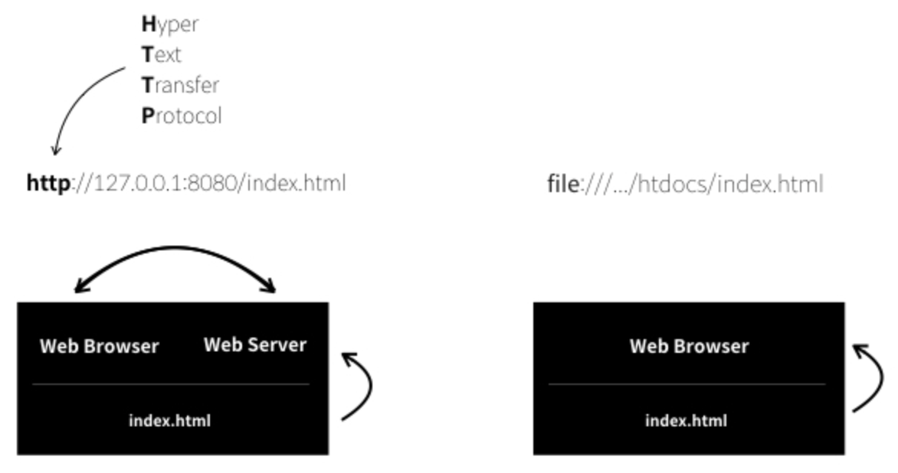

HTML
HyperText Markup Language
하이퍼텍스트 가장 중요한 특징으로 하는 마크엽이라는 형식을 가진 언어
GML(마크업언어의 시초) -> SGML(태그의 사용) -> SGMLguid --(a 태그 추가)-> HTML
HTML Element의 구조

Block level element vs Inline element
Block level element
웹페이지 상에 블록을 만든다. 이 element 앞뒤 element사이에 새로운 줄을 만든다.
inline element에 중첩될 수 없음 그러나 다른 block level element에는 중첩가능
예시 : p, li, nav, footer ..
Inline element
항상 block level element에 포함되어있음. 큰 범위에는 적용될 수 없고 문장, 단어 같은 작은 부분에 대해서만 적용 가능
inline element는 새로운 줄을 만들지 않음
예시 : a, em, strong ..
Empty Elements
img처럼 여는 태그와 닫는 태그가 따로 있지 않고 단일태그 인 것도 있다.
Tag
Tag (Element) : 해당 부분을 어떻게 할 지 설명해주는 것
참고 : html element는 대소문자를 구분하지 않음, 태그를 꼭 소문자로 쓰지 않아도 ok하지만 가독성을 위해 주로 소문자로 작성
Tag의 종류
h1,h2.. : heading의 약자이며 제목을 의미한다. 글자 크기를 바꾸며 줄바꿈을 같이 한다
줄바꿈에 쓰이는 그는 br과 p가 있다.
br : A forced line-break의 줄임말. 줄바꿈 자체를 의미한다
p : 단락을 의미하는 단락 태그
br보다 p가 더 좋다 -> 웹 페이지를 정보로서 더 가치있게 해준다
BUT! p의 단점 : 단락 사이의 간격이 고정되어 있어서 시각적 자유도가 떨어짐
하지만 CSS를 활용하면 단락 사이의 간격을 조절 가능하다!
최종 : p가 br보다 좋다 -> p 태그를 통해서 단락의 경계를 분명히 하면서 CSS를 통해서 p 태그의 디자인을 자유롭게 변경할 수 있기 때문에
input 태그 그 중에서도 체크박스 삽입.. input type="checkbox"
Attribute
속성이라는 뜻, Tag의 심화문법, 태그라는 이름만으로는 정보가 부족할 때 사용한다.
값에는 따옴표를 붙이는 것이 좋으며, 작은 따옴표, 큰따음표 어떤 것을 사용해도 무방하나, 혼재하여 쓰지말고 어느 한 방법만 택해서 사용하자. 혼재되면 작동하지 않음

위의 이미지는 img src="https://s3-ap-northeast-2.amazonaws.com/opentutorials-user-file/module/3135/7648.png"를 추가한 것임
img : 이미지 삽입 태그
여기서 src라는 속성을 통해 이미지를 불러올 수 있게 된 것 임
어떤 이미지를 불러올 지에 대한 정보가 필요하다
alt 속성 : 이미지의 경로상에 이미지가 존재하지 않을 때 표시할 정보
프로젝트에 이미지 파일을 추가해서 가져다가 쓰기 가능, width를 추가하여 크기 조절 가능 width = "비율"
Boolean attributes : 값이 없는 속성, 그 속성의 이름과 동일한 하나의 값만을 가질 수 있다.
포함(내포)된 요소 (Nesting Elements) : 태그에는 부모 자식관계가 있다.
ㅇㅇ 내가 생각하는 그거임
- li : 리스트 태그
- ul : 목록과 다른 목록을 구분해준다.
- li 태그는 ul 태그를 꼭 필요로 한다.
- ul 태그 역시 li 태그가 없다면 존재 가치가 없다.
- 이 둘은 서로 아주 밀접한 관계다.
- 숫자를 달고 싶은 경우에는
- ol : ordered list (ul은 unordered)
테이블
| 태그 이름 | 설명 |
|---|---|
| table | 테이블 태그, 과거에는 레이아웃을 잡기 위해 사용하기도 하였다 |
| thead | 테이블 각 열에 대한 설명 태그 테이블 코드 상의 순서와 상관 없이 테이블의 가장 쪽에 표현된다. |
| th | thead의 데이터들을 표현하는 태그, td 대신이라고 보면 된다. 글씨가 진하게 표시됨 |
| tbody | thead도 tfoot도 아닌 부분 마치 body 태그 같음 |
| tr | 테이블 데이터 태그, table data의 약자이다. 테이블에 들어가는 모든 요소에 붙여준다 |
| tr | 테이블에서 각각의 행들을 묶어 주는 태그 |
| tfoot | 테이블의 가장 마지막행에 들어갈 내용 (ex : 합계) 테이블 코드 상의 순서와 상관 없이 테이블의 가장 아래쪽에 표현된다. |
테이블의 병합
| 속성 이름 | 설명 |
|---|---|
| rowspan | 해당하는 칸의 수 만큼 아래 칸들과 병합 |
| colspan | 해당하는 칸의 수 만큼 오른쪽 칸들과 병합 |
문서의 구조
head : 본문을 설명하는 태그, 문서 자체를 꾸며준다. 부가적인 정보, 검색 결과에 노출될 키워드, 홈페이지 설명, css 스타일, character setdeclaration등 html 페이지의 모든 내용을 담고 있다.
title : 현재 페이지의 제목 태그, 웹 페이지의 제목을 지정, head 태그 밑에 와야함
특히 title 태그는 검색엔진이 웹페이지를 분석할 때 가장 중요하게 생각하는 태그이기 때문에 title 태그를 쓰지 않으면 정말 큰 손해
이 링크가 어떤 내용을 담고 있는지를 툴팁으로 보여주는 기능
이 웹페이지를 UTF-8로 저장했다면 웹페이지를 열 때도 UTF-8 방식으로 해석해서 열어야 한다
영어가 아닌 문자가 깨지는 이유는 웹페이지가 저장된 문자 표현 방식과 웹브라우저가 웹페이지를 해석하는 방식이 일치하지 않을 때
meta charset="utf-8" : html 문서의 문자 인코딩 설정을 utf-8로 지정하는 것
body : 본문 태그
html : head와 body를 감싸는 태그
!doctype html : 이 문서가 html로 만들어졌음을 의미
doctype : document type declaration의 약자, 어떤 방식의 문서인지를 명시해줌
head태그
페이지를 열 때 웹 브라우저에 표시되지 않음
<title>같은 페이지나, CSS의 링크, 파비콘(favicon), 메타 데이터를 포함함
head란?
head의 내용이 하는 일은 페이지에 대한 metadata를 포함하는 것
실제로 웹페이지의 소스를 보니 주로 link, meta, script로 이루어져 있었다
제목 달기
- h1 : 일반적으로 페이지당 한 번 씩 사용, 페이지 내용물의 제목이나 뉴스의 헤드라인을 표시하기 위해서 페이지를 열 때, 브라우저에 표시된다.
- title : 문서의 콘텐츠가 아니라 HTML문서 전체의 타이ㅡㄹ을 표현하기 위한 메타 데이터
Hypertext
a : html의 h의 의미인 hypertext를 의미함, anchor의 a
href : HyperText Reference의 약자로 속성이다 a태그에서 이 속성을 통해 어떤 웹페이지로 연결되어야하는지를 설정한다.
target : 속성, target="_blank"라고 하면 새로운 탭에서 링크가 열릴 수 있도록 한다
title : 속성, 링크를 누르기 전에 그 링크에 대한 설명을 띄워준다.
HTML에서 특수문자 표현하기
&과;사이에 해당하는 단어를 넣어서 표기하면 정상적으로 출력됨
| Literal Character | Character reference equivalent |
| < | lt |
| > | gt |
| " | quot |
| ' | apos |
| & | amp |
HTML 주석
<!-- 주석하고 싶은 내용 -->
form
form : 브라우저의 정보를 서버로 전송, get 방식과 post 방식이 있다.
get : url을 통해 데이터를 전달한다. post : url이 아니라 숨겨서 데이터를 전달한다.
form : 새로운 제출 양식들 (input type)
form으로 제출하는 것의 종류가 많아짐
새로운 input type들의 특징 : 의도한 정보만을 입력하게 함, 또한 제한을 걸 수도 있음
form : 새로운 속성들
autocomplete : 웹 브라우저가 자동완성을 지원, 다음 입력부터 추천함
placeholder : 폼의 입력창에 입력하기 전에 해당 입력창에 띄울 문구 설정 (폼에 대한 설명)
autofocus : 자동으로 커서가 어디에 있을지 설정해줌
form : 입력값 체크 (validation)
입력 양식에 따라 유효한 입력값이 있고 아닌게 있음 ex : email, number ..
required로 반드시 입력해야하는 값을 설정할 수 있다.
어떠한 패턴을 사용하도록 강제하고 싶은 경우 pattern="정규표현식"
html의 입력값 체크는 보안적으로 신뢰해서는 안된다.
퇴출된 태그
font
size속성을 통해 크기를, color 속성을 통해 색을 설정할 수 있다
퇴출된 이유
1. 단지 디자인에 대한 태그로 해당하는 정보에 대한 어떠한 설명도 해주지 않는다.
2. 이를 쓰게 되면 많은 중복이 발생될 수 있다.
3. 가독성이 떨어짐
CSS의 등장
디자인을 위한 별도의 언어를 만들어 html이 정보에 집중하게 만들었다
HTML이 중요한 이유 : 비즈니스적 측면과 휴머니즘적 측면
1. 일반인과 지식인이 10년 동안 1억개의 웹페이지를 만들었다면 어떤 차이가 생길까를 봅시다.
검색엔진은 전세계의 웹페이지를 분석합니다. 그리고 사용자가 검색을 했을 때 검색결과를 보여줍니다.
만약 사용자가 검색엔진에게 coding이라는 정보를 검색했다면 검색엔진은 h3 태그 로 감싸진 페이지와 strong태그 + span태그 style="font-size:22px"로 감싸진 페이지 중에 어떤 페이지를 먼저 보여줄까요?
h3 태그로 감싸진 페이지를 더 먼저 보여줄 것입니다.
h3 태그는 제목을 의미 하지만, strong 태그 + span 태그 + style="font-size:22px"는 시각적인 장식이기 때문입니다.
오늘날 정보의 세계에서 검색엔진의 검색결과에서 노출되느냐는 실제로 존재하느냐,존재하지 않느냐의 문제라고 할 수 있습니다.
100페이지 밖에 있는 검색결과를 누가 보겠어요.
의미에 맞는 태그로 웹페이지를 만든 지식인과 그렇지 않은 일반인은 10년 뒤에 인생이 달라져 있을 것입니다. 정보사회에서 HTML을 의미에 맞게 잘 사용하는 것은 비즈니스적인 측면에서 매우 중요합니다.
2. 웹의 핵심적인 철학은 접근성입니다.
웹은 모든 운영체제에서 동작하고, 웹페이지의 소스코드는 누구나 볼 수 있고, 웹은 저작권이 없는 순수한 공공재입니다.
웹의 이런 특징들이 웹을 다른 기술들과 구별되는 특별한 것으로 만든다고 생각합니다.
meta
meta data : data에 대해 설명하는 data
html 태그 들은 태그가 감싼 것에 대해 설명하니 meta data라고 볼 수 있다.
meta 태그는 부가적인 정보를 더 말한다. meta charset="utf-8"이라고 하면 인코딩을 utf-8 방식으로 설정하겠다는 거임
meta name="description" content="생활코딩의 소개자료"이런식으로 하면 그 페이지에 대한 설명, 키워드 웹페이지를 분류하는데 쓰일 수 있다.
- name : 메타 요소가 어떤 정보의 형태를 갖고 있는 지를 알려줌
- content : 실제 메타데이터의 컨텐츠
해당 페이지에서 관리자를 정리하고 머릿말을 요약하는데 유용하다. 예를 들어 저자를 지정하는 것은 콘텐츠 작성자에 대한 정보를 볼 수 있게 해준다. 일부 컨텐츠 관리 시스템에는 페이지 작성자 정보를 자동으로 추출해서 사용할 수 있는 기능이 있음
페이지 콘텐츠 관련 키워드를 포함시키는 것은 검색엔진에서 이 페이지가 더 많이 표시될 가능성이 생기게 할 수 있다. (이러한 활동을 Search ENgine Optimization, 즉 SEO라고 함)
semantic
추상적이고 광범위한것.. html이라는 태그 안에서 사용되는 여러 정보를 의미에 맞게 사용하기 위해 등장하는 그런 태그
header : ui상으로 기능이 없음, 이 웹페이지 전체에 대한 정보가 표현된 부분이 이 부분이라는 것만 알려준다.
footer : 웹사이트에 대한 부가적인 정보를 표현한다
nav : 네비게이션에 해당하는 정보 많은 리스트 중에서 이 웹페이지에 대한 네비게이션에 해당하는 건지를 표현함
article : 어떤 것이 본문인지 표현함
section : article을 묶을 때 쓰기도 하고, 그냥 header, footer등으로 표현하기는 모호한 부분을 설정
검색엔진 최적화 CEO
html을 보고 정보를 해석, 분류해서 검색에 따른 적합한 정보를 보여줌, html을 의미론적으로 잘 쓰기만 하면 됨!
url도 어떤 정보를 담고 있는지 잘 나타낼 수 있는 url이 더 좋다
디렉토리 경로가 너무 긴 것 X, link rel="canonical" href="[보여주고 싶은 웹페이지 주소]" 이렇게 적어주면 검색엔진이 알아서 아 저 주소에 있는 내용과 이 주소의 내용은 같은 거구나 하고 저 주소로 가서 보여줌, 얘가 진짜야 이런 느낌
리다이렉션 : 보통 python, java, php등으로 함 어떤 페이지로 왔을 때 다른 페이지로 튕겨 보내는 것(오리지널 컨텐츠로 리디렉션한다.)
참고 index.html이 보통 가장 기본 홈임 서버를 통해서 접속할 때는 index.html이 생략되어 있음
사이트의 이동에는 하이퍼 텍스트를 이용하자
이미지 사용 최적화 : 이미지를 제공할 때는 alt를 이용해 설명을 제공하자, 그리고 이미지는 이미지만 보관하는 디렉토리에 의미있는 이름으로 저장해서 쓰는 게 좋다
robots.txt : 접근하는 로봇들에 대한 제어, xml을 통해서 이 페이지에 어떠한 페이지들이 있는지 알 수 있음 sitemap
페이지 랭크 : 어떤 사이트를 먼저 노출할 지 매기는 순위, 실제로는 엄청 복잡하게 구성되어있다.
링크가 많이 되어있는 사이트일 수록 랭크가 올라간다. 많은 사이트가 링크된 사이트가 링크를 한다면 해당 사이트는 랭크가 더 올라감 간단히 생각했을 때 이런 방식임
이것을 보면 html이 정보로서 정말 중요하다는 것을 알 수 있음
웹 개발자 도구
웹 브라우저는 각자 대부분 웹 개발자 도구를 가지고 있고 다들 비슷하게 동작함
Network 탭 : 웹 서버와 웹 브라우저가 어떻게 정보를 주고 받는 지 볼 수 있음
모바일 지원
meta name="viewpoint" content="width=device-width"을 상단에 추가하면 각 디바이스에 최적화된 화면을 제공함
initial-scale=1.0을 저 width 뒤에 콤마하고 추가하면 처음의 화면을 확대되지 않은 상태로 제공한다.
웹서버와 HTTP
웹브라우저는 제품명이 아니라 제품군이듯, 웹서버도 그렇다. 대표적인 웹서버 제품으로는 다음과 같은 것들이 있다.
- Apache
- IIS
- Nginx
밑의 주소들은 모두 내 컴퓨터의 index.html 파일을 요청
http://localhost:8080/index.html
http://127.0.0.1:8080/index.html
localhost : 도메인 네임, 127.0.0.1 : ip 주소
index.html은 htdocs파일 안에 있는데 htdocs는 hypertext documents 의 약자임, 웹페이지가 저장된 디렉토리라는 의미

여기에 내프로젝트를 그대로 복사해두면 ok

////summary////

127.0.0.1은 내 ip주소의 대명사 너낌